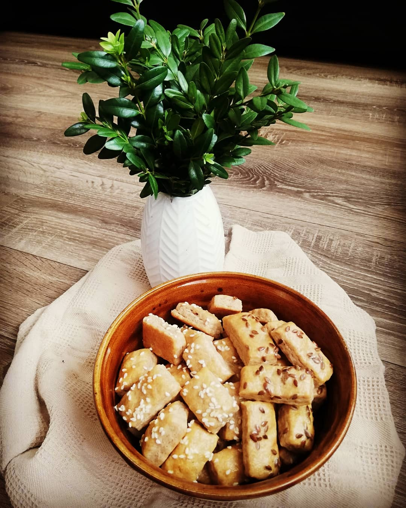

Bryndzové tyčinky — Normy Jedál
BRYNDZOVÉ TYČINKY
Recept
🔸125 g bryndza
🔸125 g zmäknuté maslo
🔸250 g hladká špaldová múka
🔸140 g biely jogurt
🔸1 vajíčko
🔸1 prášok do pečiva
🔸Soľ
Všetky ingrediencie spolu zmiešame. Vypracujeme hladké cesto. Zabalíme do fólie a dáme do chladničky. Cesto vyvaľkáme na 0,5 cm a potrieme ho rozšľahaným vajíčkom. Narežeme si obdĺžniky alebo môžte vykrajovať rôzne tvary. Dáme na plech s papierom na pečenie a posypeme rôznymi semienkami. Pečieme na 200°C cca do zlatista.
🔶🔶🔶🔶🔶🔶🔶🔶🔶🔶🔶🔶🔶🔶🔶
COTTAGE CHEESE STICKS
Recipe
🔸125 g cottage cheese (Slovak -
bryndza)
🔸125 g softened butter
🔸250 g plain spelled flour
🔸140 g white yogurt
🔸1 egg
🔸1 baking powder
🔸Salt
Mix all ingredients together. We will make a smooth dough. Wrap in foil and put in the refrigerator. Roll out the dough to 0.5 cm. We rub it with a beaten egg. We cut rectangles or you can cut out different shapes. Place on a baking pan with baking paper and sprinkle with various seeds. Bake at 200 ° C 10 minutes.
#brydza#bryndzovetycinky#foodie#food#slovak#slovakfood#foodstagram#baking#bakingtime#bakingwithlove#pecenieslaskou#dnesjem#dnesjimfit#dnesjemzdravo#zdravyzivotnystyl#snack#snacktime#soyummy#zdravyrecept#zdraverecepty#healthyfood#recipes#zdravastrava#dnespecu#zdravejidlo#jimezdrave#recipesbyyou#fitnessrecepty#fit#zdravepeceni